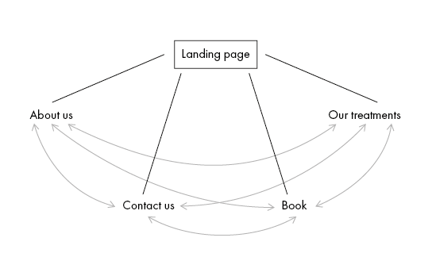
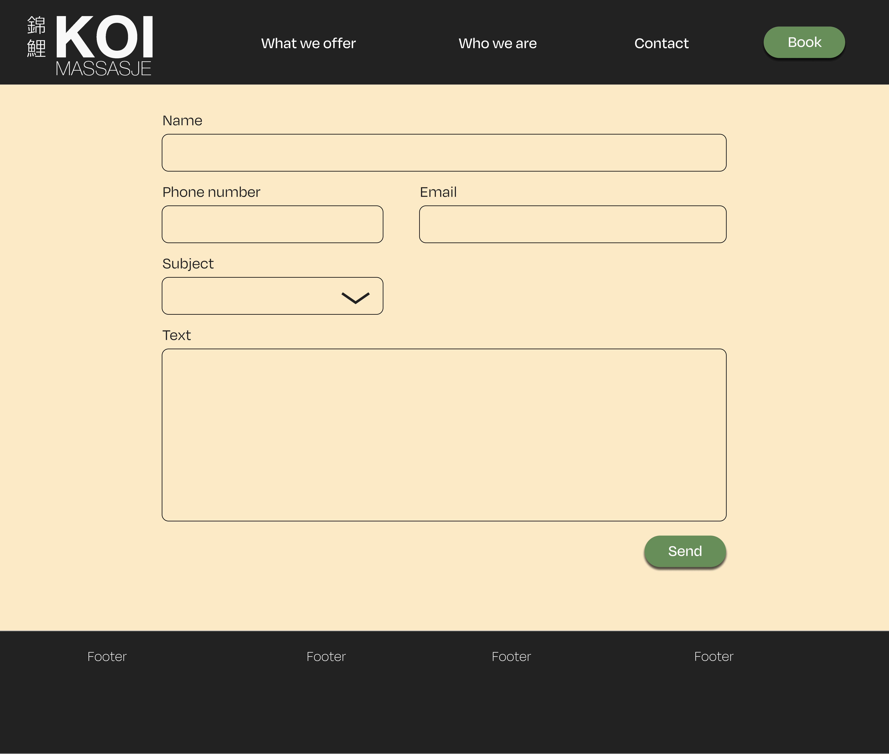
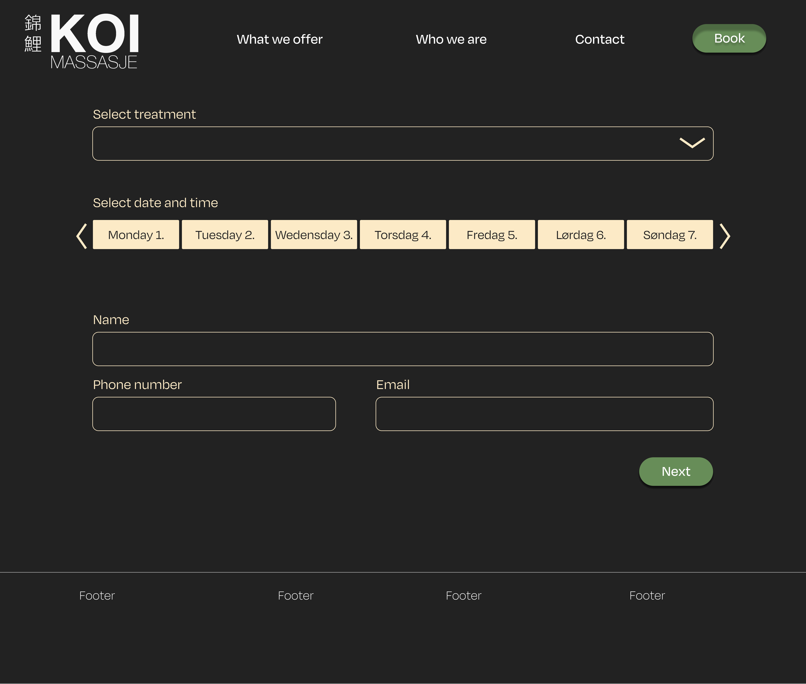

The client
Client name: KOI
KOI is a fictive massage business based in Trondheim. The name KOI derives from the well known carp fish, koi.
The fish is often associated with strength of character and perseverance, and KOI wants to make the customers
feel the same after a visit. KOI is striving to help individual customers feel relaxed, revitalized and strong.
The business’ main focus is private, individual customers, but KOI also offers
treatment for businesses that want to include KOI’s services in their employee benefits.
Audience
The website's audience is divided into both existing and new customers, and segmented between private individuals and businesses.
Existing customers who know how the site works and know what treatment they want, can jump quickly to the booking- or contact-form within two clicks.
As for new customers they will have the opportunity to explore what treatments KOI offers, both private individuals and businesses alike.
The typical customer is in the age group of 25-35, working full-time, quality conscious and comfortable economically.
They use massage for the purpose of well-being, getting a break from a hectic day-to-day life and stress, not to treat injury.
For businesses it should be easy for them to find KOI's package offers meant for them, so they can provide services as part of their employee benefits.
Navigation Structure
We want our website to be fluent and repsonsive when in use, so that our policy about segmenting between new and regular users remains.
Regular users usually know what treatment they want, and since the navigation bar is located at the top of each webpage with a distinct "Book"-button
it is easier for this type of users to go head straigth to the booking form, i.e. "Book"- webpage.
As for the new users, the navbar at top helps with creating a mental model of how KOI's website is structured, in addition to orientation.
Having a navigation bar applies to all of KOI's users making the website more intuitive to use,
at the same time helping to avoid annoyances when using it.

Content
index.html
This is what users will see visiting KOI for the first time.

Arrow will signify that is more content in lower part of index page. Or
clicking "what we offer" in the navbar links the user to the bottom as well.

about_us.html
Dynamic representation of the different masseuses that works in KOI, in addition to their specialty.
E.g. specializing in neck massage etc.

contact_us.html
Simple form for requesting and getting in contact with KOI.

book.html
Simple form to book treatment. After clicking "Send", a feedback
displaying a successful booking will be displayed.

Plan
An overview of the file structure is displayed below.
All files will be in stored in a folder named
"KOI-massage."
- index.html
- about_us.html
- contact_us.html
- book.html
- our_treatments.html
- CSS/
-
JavaScript/
- book_feedback.js
- index_vid_effect.js
- anim_ndex_arrow_effect.js
- gallery_carousel.js
- pic_hover_effect.js
- img/
-
people/
- owner/founder
- masseur1
- masseur2
- masseur3
- masseur4
-
atmosphere/treament/
- favicon.png
- vid/
As for the workload, we have divided it by assigning the
html-page and corresponding js-file to each member respectively, for instance
Celine B. is responsible for "our_treatments".html and "gallery_carousel.js", where
the js-application is implemented for this website.
style.css can be done in a plenary session.
| File |
Description |
Responsible |
Date |
| index.html |
Landing Page + info about our tretments |
Ida M. |
20/10 |
| about_us.html |
Overview of masseurs and KOI |
Celine B. B. |
20/10 |
| contact_us.html |
Form for contact |
Celine H.N. |
20/10 |
| book.html |
Form for booking |
Daniel |
20/10 |
| style.css |
Styling for all pages |
Shared Effort/Khai & Daniel |
25/10 |
| book_feedback.js |
Script for displaying sent request |
Daniel |
01/11 |
| index_vid_effect.js |
Fade effect for video on landing page |
Ida M. |
01/11 |
| anim_index_arrow.js |
A simple effect to indicate homepage button |
Ida M. |
01/11 |
| arrow_hidden_box.js |
Opens a hidden element containing additional information about our treatments |
Daniel |
01/11 |
| gallery_carousel.js |
Script randomizing gallery preview |
Celine. N.H. |
01/11 |
| pic_hover_effect.js |
Masseurs in dynamic display |
Celine B.B. |
01/11 |
| navbar_footer_modularity.js |
adds navbar and footer without extra code |
Khai |
01/11 |